The gist:
Distilling optical flow networks into pixel-level task-agnostic representations.
Input
DINOv2
V-JEPA
VideoMAE
FeatUp
FlowFeat
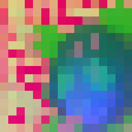
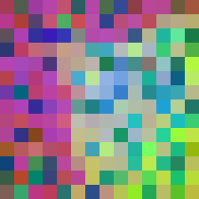
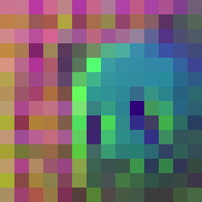
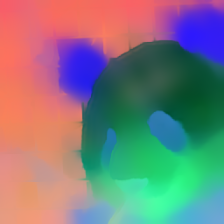
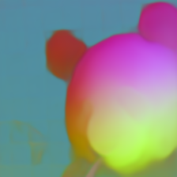
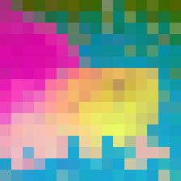
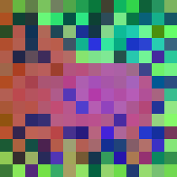
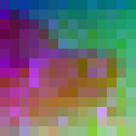
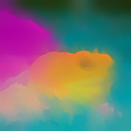
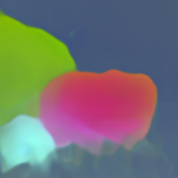
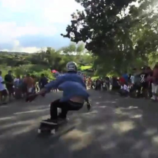
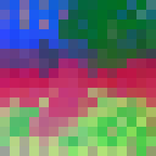
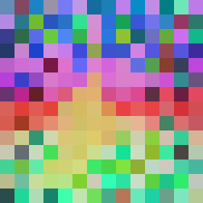
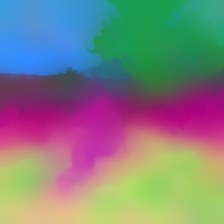
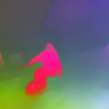
FlowFeat provides versatile pixel-level features. Using motion-driven embedding statistics, it achieves high spatial precision and temporal consistency.
Shown: PCA visualization of feature maps vs. state-of-the-art encoders.
Video Object Segmentation
FlowFeat is a fine-grained feature representation, where dynamic objects are particularly prominent.
Comparison to FeatUp (Fu et al., 2024)
FlowFeat scales well with the input resolution – here, increased by a factor of 2.
Comparison to LoftUp (Huang et al., 2025)
FlowFeat fares well against supervised models such as LoftUp and can be trained in a completely unsupervised fashion.
Citation
@inproceedings{Araslanov:2025:FlowFeat,
author = {Araslanov, Nikita and Sonnweber, Anna and Cremers, Daniel},
title = {{FlowFeat}: Pixel-Dense Embedding of Motion Profiles},
booktitle = {NeurIPS},
year = {2025},
}